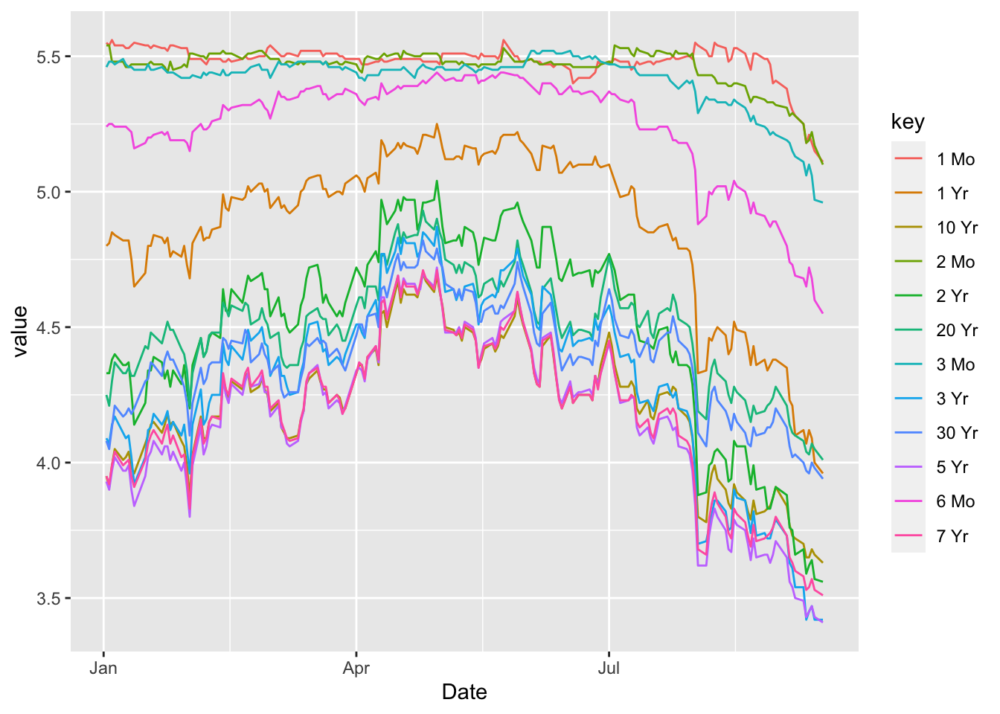
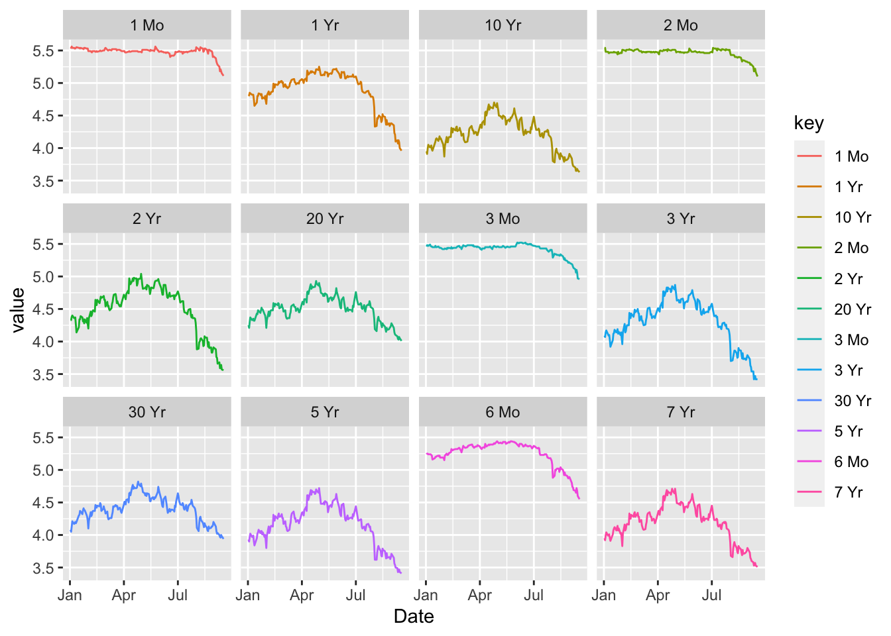
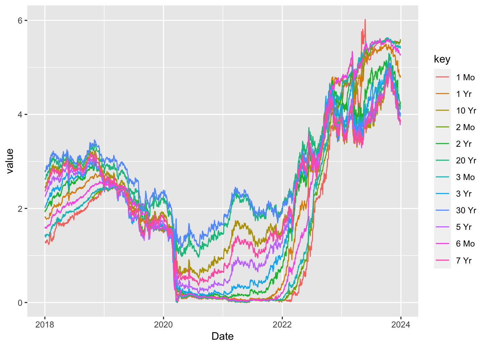
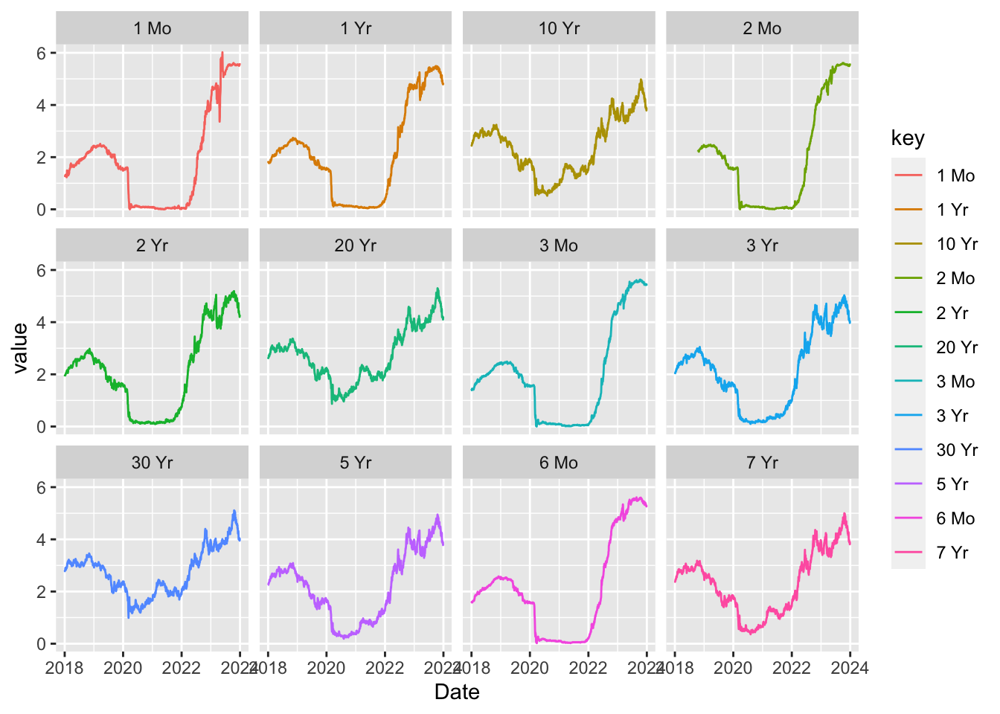

US Department of Treasury Data
Daily Treasury Par Yield Curve Rates
The Daily Treasury Par Yield Curve Rates represent the yields (interest rates) on U.S. Treasury securities for different maturities (ranging from 1 month to 30 years) that are set by the U.S. Department of the Treasury. These rates are important indicators used to understand market expectations for interest rates, inflation, and economic growth.
Here’s a breakdown:
1. Par Yield Curve:
- A yield curve is a graph that shows the relationship between bond yields (interest rates) and maturities.
- The par yield curve specifically represents the yields of Treasury securities that are trading at par value. Par value means the bond is trading at its face value (i.e., neither at a premium nor a discount).
- The Daily Treasury Par Yield Curve Rates show the yield (interest) on Treasury bonds of various maturities for each day.
2. What Do the Rates Represent?:
Each rate represents the return an investor can expect to receive if they buy a U.S. Treasury bond at par and hold it to maturity. The Treasury issues bonds with different terms, and the yield on each bond reflects: - Investor expectations of future economic conditions, including inflation, interest rates, and the risk of recession. - The Federal Reserve’s monetary policy, particularly interest rate expectations.
For example: - Short-term yields (like 1-month or 1-year bonds) are heavily influenced by the Federal Reserve’s current policy decisions on interest rates. - Long-term yields (like 10-year or 30-year bonds) reflect expectations about long-term growth, inflation, and risks in the economy.
3. How Is the Data Presented?:
- The data is typically presented in a table or graph with columns for different maturities (like 1 month, 3 months, 2 years, 10 years, etc.) and rows showing the daily rates.
- As of any given date, you can see the yield that the market is assigning to each maturity.
4. What Influences These Rates?:
- Inflation Expectations: When inflation is expected to rise, investors demand higher yields, particularly for longer-term bonds, to compensate for the loss in purchasing power over time.
- Federal Reserve Policy: The Fed controls short-term interest rates and influences the entire yield curve. When the Fed raises rates, it typically causes short-term yields to rise.
- Market Sentiment and Economic Conditions: During times of economic uncertainty or recession fears, investors often shift to safer assets like Treasury bonds, which drives bond prices up and yields down, especially in longer-term bonds.
5. Types of Yield Curves:
The shape of the Treasury yield curve provides insights into economic conditions: - Normal Yield Curve: Long-term rates are higher than short-term rates, indicating expectations for future growth and inflation. - Inverted Yield Curve: Short-term rates are higher than long-term rates, often viewed as a signal of an upcoming recession. - Flat Yield Curve: Little difference between short-term and long-term yields, which can signal economic uncertainty.
6. How Is It Used?:
- Economic Indicators: The shape of the yield curve is closely watched as a predictor of future economic conditions. An inverted yield curve, for instance, is often taken as a sign of an impending recession.
- Investment Decisions: Investors use Treasury par yield rates to decide which bonds to invest in, balancing risk and return.
- Monetary Policy Insight: It gives an idea of how the market perceives the Federal Reserve’s future actions regarding interest rates.
Example (Simplified):
Let’s assume the Daily Treasury Par Yield Curve Rates for a specific day look like this: - 1-month: 0.10% - 1-year: 0.50% - 5-year: 1.00% - 10-year: 1.50% - 30-year: 2.00%
This would show that short-term yields (1-month) are quite low, but as you go further out in time, the yields rise, reflecting the market’s expectation that interest rates and inflation will increase in the future.
Summary:
The Daily Treasury Par Yield Curve Rates provide a snapshot of the yields on U.S. government bonds of varying maturities. These rates are essential for understanding market expectations for future economic conditions, including growth, inflation, and interest rate changes. Investors and policymakers closely watch the yield curve to anticipate future trends and potential economic shifts.
YouTube Tutorial
see transcript below https://www.youtube.com/watch?v=YaM2PZllizE
Current Year, 2024
Yield Curve Inversion has taken place. Compare 1-Month Yield vs 1-Year Yield. See the first 2 facets of Figure 2

From 2018 to 2024


Bond Market Trends and Impending Recession
The bond market is often considered a strong indicator of economic trends, particularly in relation to recessions. Here’s how the bond market trend can signal an impending recession:
1. Yield Curve Inversion:
- Yield curve refers to the difference in interest rates (yields) between short-term and long-term government bonds.
- In a normal yield curve, long-term bonds have higher yields than short-term bonds because investors demand more interest for taking on the risk of lending for longer periods.
- Inversion occurs when short-term bond yields rise above long-term yields, signaling that investors expect lower growth or even a recession in the future. Historically, an inverted yield curve has been a reliable predictor of recessions, as it suggests investors are seeking safe, long-term investments, signaling pessimism about short-term growth.
Current Trend: As of late 2023 and early 2024, parts of the U.S. yield curve have been inverted, raising alarms about a potential recession. Investors seem to expect slower growth and lower interest rates in the future.
2. Flight to Safety:
- During periods of uncertainty or fear of a recession, investors tend to move their money into safer assets, like government bonds.
- This increased demand for bonds pushes bond prices up and yields down, further reflecting concerns over economic growth.
- A surge in bond demand and falling yields often suggests that investors are bracing for economic downturns.
3. Interest Rate Impact:
- Central banks, like the U.S. Federal Reserve, use interest rate hikes or cuts to influence the economy. When inflation is high, central banks raise interest rates to cool it down.
- However, aggressive rate hikes can slow down economic growth by making borrowing more expensive. If the economy slows too much, it risks tipping into a recession.
- The bond market reacts to these rate hikes—short-term bonds’ yields rise in response to higher rates, while long-term bonds’ yields may fall, reflecting concerns about future economic stagnation or a downturn.
Current Scenario: Central banks, including the Fed, have raised rates to combat high inflation. Some economists believe that prolonged high interest rates could lead to a recession as economic activity slows down.
4. Corporate Bond Market:
- The corporate bond market also reflects recession risks. When economic conditions worsen, investors demand higher yields on corporate bonds (especially lower-rated bonds) to compensate for the increased risk of default.
- Rising corporate bond spreads (the difference between yields on corporate bonds and government bonds) indicate that investors see greater risks to corporate profitability and creditworthiness, which often aligns with a deteriorating economy.
5. Debt Levels and Refinancing Risks:
- High debt levels in the public and private sectors, combined with higher interest rates, can exacerbate economic challenges. As debt becomes more expensive to service, households and companies may cut back on spending and investment, further slowing economic activity.
- This is particularly concerning as companies and governments need to refinance existing debt at higher interest rates, which could stress their finances and lead to more conservative financial behaviors.
What Does This Mean for an Impending Recession?
- The bond market’s recent movements—yield curve inversions, falling long-term yields, and rising corporate bond spreads—suggest that investors are wary of a potential recession.
- While not guaranteed, these trends have historically been reliable recession indicators.
Key takeaway: The bond market is signaling economic caution due to tightening monetary policies, inflation concerns, and slower economic growth prospects. These factors suggest the possibility of a recession in the near future, though the exact timing remains uncertain.
Video Transcript
0:00 so in this complete tutorial I’m going to share everything that you need to know about the bond market how to invest 0:05 in bonds different types of bonds okay so so let’s just get into this video I know there’s probably other things you 0:10 could be doing but I can promise you this that if you stick around for this tutorial where I really walk you through 0:16 the entire bond market if you stick around I think you’re going to take some things away that you can use for the 0:21 rest of your life that probably 99 of other people don’t understand because they don’t have the patience to actually 0:27 try to understand the bond market and I think one of the biggest things that people think initially about bonds is 0:34 that they are boring and that you can only make four or five percent per year 0:39 on them and that they’re for Baby Boomers and uh yeah but that’s really not the case and there’s times when you 0:45 can make over 50 or 60 percent uh in the bond market you can also lose a lot of money uh in the bond market as well and 0:52 we’re going to share all of that here in today’s video so let’s go ahead and get started with this video it’s going to be 0:58 a bit longer I do recommend taking out a pen taking out a piece of paper or writing some of these notes down because 1:04 um we’re going to kind of get into it uh pretty deep so let’s just pull this up here and let’s get started with it of 1:11 course if you’re new here to the channel make sure you subscribe for more videos like this this is our first Bond tutorial we have stock market tutorial 1:18 other ones as well so just a brief overview of what we’re talking about today we’re going to go over what a bond 1:24 is how it operates some key terms to understand and then all the various different types of bonds we have 1:30 government bonds municipal bonds corporate bonds we have different types of like debt back Securities it gets a 1:35 bit confusing we’ll clear all of that up for you and then we’ll talk about things like taxes on bonds how to buy bonds how 1:42 to trade bonds bond trading strategies mistakes and we’ll just go through the whole list here and really give you 1:48 pretty much everything that I know about the bond market okay so let’s start off actually with the first sort of myth Bond myths 1:54 about the bond market that it is boring so when last year when I was trying to 1:59 tell people people that I was going long on some of these long dated treasuries and you know because like the 10-year 2:05 was over four percent I’ll explain all these terms in the coming minutes here but I was trying to explain to people that I was trading bonds last year and 2:12 every single person that I said that to said that’s boring can’t you only get three or four percent on those bonds why 2:18 are you doing that um and I had to explain to them that there’s differences between bond prices and bond yields and you can actually 2:25 make a lot of money in the bond market um and so here’s Michael burry for example he’s the guy from The Big Short 2:31 but if you were paying attention about a year and a half ago he went short on 2:37 long-term Bonds on on long-dated Bonds in the U.S and if you followed his trade 2:42 on this and you went well triple levered on a short position on that you would be up about 87 almost 88 in 2022 by 2:52 shorting the bond market triple leveraged of course but still 88 percent in one year so that’s a hell of a lot 2:59 more than three or four percent yields on that now you could have also lost 88 if you were triple leverage long on 3:06 these long-dated bonds like a lot of baby boomers were and older people were and they lost a lot of money on those 3:12 okay so just wanted to just kind of get that myth out first before we get deep into this is that Bonds were boring 3:17 they’re really not and you can uh have higher fluctuations in prices uh than something like the stock market and I 3:24 actually like the bond market more uh than I do the stock market personally Okay so What is a bond? 3:30 what’s wrong with the basics here of what is a bond okay so a bond is is 3:35 basically just a fixed income uh instrument that represents a loan made by an investor or a borrower okay so the 3:43 basics of this is that when an entity needs to raise money Perhaps it is a government or a city or a company they 3:51 need to come up with some money they have a couple different ways of coming up with that money and one of them is to issue bonds it’s to basically uh have 4:00 someone lend them money and then they pay them back typically at predetermined amounts essentially uh they will set a 4:08 coupon rate we’ll talk about all these terms in the coming minutes as well but this interest rate is usually payable at 4:14 fixed intervals either semi-annually annually or sometimes like monthly but that’s pretty rare to see usually we see 4:21 them as semi-annually so twice a year there are Bond payments being made 4:26 um and so let’s talk about how entities raise money when I say entity I mean anything that could be a company a 4:34 government a City a state pretty much any entity that needs to raise money how do they do this well actually the most 4:41 common route is to issue bonds so let’s say that you live in Los Angeles and the 4:47 city of Los Angeles wants to build a new bridge somewhere well I guess there’s not that many rivers but they want to 4:53 build a new bridge right and it’s going to cost them 30 million dollars well they might not just have 30 million 4:59 dollars sitting in the LA bank account and so they might issue bonds to fund 5:05 that bridge and then they will pay that Bond back over a certain predetermined 5:10 amount of time okay so that’s one way now there’s other ways for entities to raise money and something like Equity 5:16 capital is pretty common as well for businesses so let’s say Apple computer 5:21 right your your iPhone they actually do both of these they issue bonds sometimes when they need some extra cash but Apple 5:28 also has stock same for Microsoft and Google and most other big companies they have stocks and so that’s actually a way 5:35 for companies to raise money as well it’s kind of why they’re public in the first place because they needed to raise some money and there’s other things as 5:42 well like retained earnings basically if a company you know they just keep the money that they’re making and that’s a 5:47 way that they can kind of raise money for new things okay so those are the three Basics way basic ways that a 5:53 company or an entity can raise money it’s important to understand this because this is like you can see why bonds are very important to the world as 6:00 it is now actually something very interesting is that the bond market is much bigger than the stock market you Bonds vs stocks 6:07 know you hear about the stock market so much more especially today uh you know if you go back to like the 1970s or the 6:13 1980s Bond Traders were everywhere and people talked about bonds all the time probably well it wasn’t around in the 6:20 70s but uh probably almost as much as they talked about the stock market people talked about bonds today you 6:25 don’t really see that and so people just kind of assume that the stock market is much larger but in fact the bond market 6:30 is much much bigger than the stock market in the world so the bond market and these are rough estimates is of 6:36 course fluctuates every day but it’s about 119 trillion dollars with 700 billion dollars in daily trading volume 6:42 compare that to the stock market Which is less than half at about 46 trillion dollars total with about 200 billion 6:49 dollars in total trading volume Which is less than one-third of bond daily trading volume so the stock market much 6:56 smaller than the bond market so going a little bit deeper into this understanding the differences between 7:01 bonds and stocks is that bondholders have priority over stockholders when 7:08 there’s something like a bankruptcy okay so when a company goes bankrupt they run out of money they can’t pay their debts 7:15 the bondholders typically end up actually taking over that company whatever’s left maybe there’s some IP 7:20 some inventory something else like that the bondholders tend to get priority over that and then the stockholders 7:26 whoever owns equity in the company is basically last on the totem pole in 7:31 terms of priorities so bondholders do have it a little bit better in that sense if there is a bankruptcy but also 7:38 you don’t have as much potential upside as well let’s say that you owned some 7:43 apple bonds back in the 1980s uh well okay maybe they were paying you like 7:49 five percent interest per year on those bonds but if you were a stockholder and you held that for a longer period of 7:54 time you probably got a lot more than five percent so bondholders they lose out on some potential upside if a 8:00 company does really well um but they also have priority over stockholders in bankruptcy and it’s also 8:07 a little bit more predictable in terms of coupon payments and everything else okay so that’s the primary differences between bonds and stocks just remember 8:13 bond market is much much bigger than the stock market so here’s some key terms to Key terms 8:19 understand this is a very simplified chart here but I think this is going to help you when you see these various words thrown around and feel free to 8:26 write these down if you want or just spend some time some extra time I’m on this particular segment because these 8:33 are some pretty important phrases so a bond issuer is the one who’s borrowing so Apple going back to the Apple example 8:40 Apple might issue Bots it might issue a billion dollars worth of bonds and so they are the ones who are borrowing that 8:46 money the investor is also known as the lender so if you invest into those apple 8:51 bonds you are the lender or also known as the Creditor okay principal face 8:57 value par value these are all kind of interchangeably used in a lot of cases and this is basically just the amount 9:03 that has been borrowed and then we have things like coupon rate you’ll see this running around a lot the coupon rate 9:08 it’s just the interest rate now coupon rates for most bonds are predetermined 9:15 uh when that bond is issued so coupon rates typically don’t fluctuate I mean there are some cases but almost always 9:21 you’re going to see coupon rates that are steady so a bond might be issued for 10 years or 20 years and that coupon 9:28 rate will be set on the day a that the bond is issued that this is the coupon rate it might be four percent or five 9:33 percent or one percent totally depends on a lot of different factors okay the coupon rate is the interest rate 9:39 remember that okay um and then the coupon is the interest payment now maturity is the due date on 9:47 that Bond so uh for government bonds we have things that are like three months and six months and it goes all the way 9:52 out you know you can have a seven year ten year thirty year it goes far out 9:57 right and we’ll talk about that in the different uh types of bonds further on in this video but just remember that 10:03 maturity means the due date on the bond and this is when the bondholder has to 10:09 pay the full amount back so when a bond is issued what normally happens is let’s 10:15 say that Apple issues uh a billion dollars worth of bonds and they’re going to pay them back in five years so 10:21 typically what happens is then they pay those coupon payments every six months 10:26 or so depending on what the terms were set beforehand uh they basically just pay interest payments for those five 10:32 years and at the end of the five years they pay back the full billion dollars that they issued on the bonds okay so 10:40 that is uh what’s going to happen with the maturity on the bond okay uh the term is 10:47 just the time until maturity yield to maturity uh you’re going to see the word yield being thrown around a lot so yield 10:54 and coupon rate they are different okay so the yield it’s kind of similar to the coupon rate in in the sense that it’s 11:00 like the percentage interest that you’re getting on the bond but the yield you will see fluctuate this is dependent on 11:06 the price as well uh the yield fluctuates based on the current macro environments in the bond market also 11:12 things like credit ratings so coupon rate doesn’t fluctuate and a yield tends 11:18 to fluctuate um and then we have market value as well which is the price of the bond we will talk about bond prices versus bond 11:25 yields stick around for that it’s going to be towards the end and I’m only going to talk about it at the end because it 11:30 can be a little bit confusing and I want to make sure you have a good understanding of bonds before we talk about the correlation the inverse 11:36 correlation between bond prices and bond yields okay so let’s continue on here Government bonds 11:41 and let’s talk talk about the different types of bonds these are all things that you can consider investing into I should 11:48 mention of course this is not Financial advice so please do your own research you could totally lose money on bonds 11:54 any type of Investments you should consult with a financial advisor because I’m just a guy on the internet okay I 11:59 think we all know that by now so let’s talk about these different types of bonds we have government bonds municipal bonds International corporate and other 12:05 types of bond backed Securities so um let’s start with the most common one 12:11 which is going to be government bonds so government bonds we’ll talk about U.S treasuries specifically but a lot of 12:17 governments have bonds so you know if you live in the UK or you live in Australia or Japan or in most European 12:24 countries honestly most countries in the world the Nations they do issue bonds 12:30 okay so there’s a difference though between uh treasury bills treasury notes and treasury bonds and the only 12:37 difference between these is the time until maturity of those bonds okay so 12:43 treasury bills are one year or less you typically see these as like a three-month treasury bill or a six-month 12:49 treasury bill or a 12-month treasury bill right and then we have treasury 12:54 notes and treasury notes are in the two to ten year maturity phase so these are 12:59 somewhere in the middle and then we have treasury bonds which are the really long ones that are about 20 to 30 years now 13:06 in the US we only have bonds that go out 30 years there was talk about having 100 13:11 year treasury bonds but that never happened it never came to fruition it 13:17 could happen in the future but for now the furthest out that we have are 30-year bonds for the U.S right so uh 13:24 right now we’re in 2023 so there are bonds being issued for 2053 right now 13:30 yeah that’s kind of crazy to think about uh that one day those bonds will come to maturity uh other types of bonds as well 13:36 we have series I savings bonds these are pretty cool they’re netting over six percent right now uh if you are in the 13:42 US you can invest into them we’ll talk about them in a minute and then we have other things as well like uh tips which 13:48 is uh treasury inflation protected securities I don’t really trade these but some people like them 13:53 um and then so yeah so those are the different types of government bonds that we have okay so I want to show you the 13:59 different yields on these government bonds and you can see depending on how long how far out they are this is going 14:06 to determine the current yield on those bonds now right now we’re in a weird spot because the yield curve is inverted 14:12 we’ll also talk about inverted yield curves later on in this video but you can see that right now okay so this is 14:19 actually a weird time to make this video because right now if you get like one month or three months or six month uh 14:25 treasury bills they’re netting about 4.5 to 4.8 percent and then the longer dated 14:31 ones like the 30-year Bond or the 10-year bonds are at like three and a half percent this normally doesn’t 14:37 happen normally the ones that are further out are going to be at higher rates and the ones that are shorter term 14:43 are going to be at lower rates um but you can see that like the 10-year note for example back in 2020 and 2021 14:50 Bonds were really really low yields I mean a lot of Bonds were yielding like 14:55 less than one percent as you can see back here in the summer of 2020 Bond 15:00 ranked super super low then as we had inflation Bond rates started to go up and up and up and up and they peaked out 15:08 above four percent on the 10-year and on some of these over five percent on the 15:14 shorter dated ones so really interesting to see that happen um and people who bought bonds back in like 15:22 the summer of 2020 if they bought 10-year notes they probably lost a lot of money and it is possible to lose 15:28 money in bonds if you then go sell those I’ll explain that because there’s something called opportunity cost 15:34 um so there’s also different types of government bonds outside the U.S right so like I said a lot of other countries 15:39 issue bonds and the rates will totally be determined by uh the The credibility 15:45 of a country the demand for that country’s bonds and then other things as well like inflation rates in that 15:51 country so for example we can see Japan here a 10-year bond in Japan is only 15:57 netting about 0.44 interest on a 10-year bond that is 16:04 extremely low and that’s for a lot of reasons you know Japan tends to not have very much inflation they also are 16:10 somewhat credible but the government of Japan also has some crazy Bond buying 16:15 programs um I love Japan but uh they have some economic problems that the US is probably going to end up in pretty 16:22 soon as well but yeah all love for Japan just saying that there’s there’s a reason why those yields are really 16:27 really low um and then you know you might look at like Italy versus France for example and 16:32 wonder why the yields are higher on Italian bonds than they are on French bonds this could be for a number of 16:38 reasons you have to get to the bottom of all of this it could be perhaps that maybe it’s seen as a riskier country maybe they might uh have a higher chance 16:46 of defaulting on that debt right look at Greece for example they’ve also tended 16:51 to have a higher yields on their bonds because they’re seen as a bit risk here in terms of default risk okay so other 16:59 types of government bonds that we have the series I bond this is one of my favorites now right now it’s getting 17:05 6.89 percent on the I bonds you can buy these on 17:10 treasurydirect.gov make sure you’re on the right website you don’t want to get scammed there’s so many just Bad actors 17:16 out there but you can buy them directly from the government you don’t need a broker anything else like that treasury 17:21 direct.gov you can only get ten thousand dollars per year in these but you’re 17:27 getting a 6.89 percent interest rate at the moment now last year I remember this 17:33 interest rate was over nine percent it was I think it was like 9.12 or something but you could get on the 17:39 series I government savings bonds they’re pretty cool um and I probably would recommend them 17:45 to people of course I’m not a financial advisor but I do think that they’re relatively stable uh and the only way 17:51 that you wouldn’t get your money from this is if the US government just totally collapses but at that point I 17:56 think we’d have even bigger problems than trying to get our money from the government okay so 18:02 um series I Bond’s pretty cool I do like them so there’s another type of government bond that you don’t really see very often uh but I remember I got 18:09 one of these when I was born actually I think I got two of them from my aunt and from my uncle they were like 25 double e 18:16 bonds and basically uh these are netting pretty low amounts right now it’s like 2.1 percent or something but uh the 18:23 whole thing with these bonds is that they’re guaranteed to double in a 20-year span so that’s kind of one of 18:30 the government programs that they have it’s netting really low right now so like I said I don’t really see people 18:36 talking about them but it is kind of like a cool gift I guess you could give to like someone who’s born uh you know 18:42 you give it to them when you know you give them a 50 one and by the time they turn 18 or 20 it’s going to have doubled 18:48 in price uh so that’s that’s kind of cool I guess they used to actually be physical ones like I had one uh when I 18:54 turned 18 my mom gave it to me and it was it was a 50 one I think and it was a physical piece of paper had my name on 19:00 it it had my address and everything I took it into my local bank and I said I want to cash this in and they’ve ran 19:05 some numbers and said okay you know here’s your money from it so kind of cool but they don’t give the physical 19:10 ones anymore um so I think it’s all just through treasury direct right now at the moment but um yeah not much use for them right 19:18 now because it’s netting 2.1 percent pretty low you can get better yields in other places then we have things like 19:23 treasury inflation protected securities I I’m gonna be totally honest I don’t trade these but some people like them 19:30 think of it kind of similar to like money market it tends to be rolling so it’s like floating right is what I meant 19:37 it’s also very very tradable and it can protect you from inflation you can also 19:42 get these through uh treasury direct and they do I think have auctions for these as well so I’ve never bought Bonds on 19:50 auctions but you can do that if you would like um but yeah treasury inflation Protection security is being totally 19:56 honest I I don’t trade these but I know some people who who like them um and the rights are fairly competitive Municipal bonds 20:02 so now we talked about the government bonds let’s talk about municipal bonds munis 20:08 that’s what some people call them and these actually have some pretty good benefits to them so municipal bonds 20:14 they’re issued by cities or counties or other different types of governments 20:19 um and the coolest thing about them is that they tend to have some really good tax advantages so it depends where you 20:26 are but if you’re in the United States from my understanding and of course talking to accountants and stuff but from my understanding they are tax 20:33 exempt on a federal level sometimes on a state level as well and this can actually really make a big difference 20:39 like for example if you have a U.S government Bond that’s getting you four percent but you have a municipal Bond 20:46 getting you three percent you would think that the government bonds better but after you account for taxes sometimes the municipal Bond can 20:52 actually end up netting you a better amount of money because you don’t have to pay taxes on it so it’s pretty cool 20:58 especially if you are in high tax brackets like if you’re paying 30 seven 21:04 percent federal tax in the United States anyway well then this is actually probably going to be a pretty good bet 21:10 for you investing into something like municipal bonds there’s two different types of municipal bonds we have General 21:15 obligation and we have revenue-based municipal bonds okay so the general obligation is basically just let’s say 21:21 that the state of Texas says hey we just need a billion dollars no particular 21:27 reason we just need to cover some expenses and so they go out they issue those bonds and they pay you back you 21:32 know of course based on you know the maturity date the coupon rate everything else is predetermined right but there’s 21:37 no particular Revenue Source from that because governments they have that ability to Levy taxes and they can just 21:43 raise taxes if they want to come up with that money if they need Revenue based is more so things like maybe a state like 21:52 Georgia says hey we want to build a new nuclear power plant and we’re going to take the money uh we’re going to borrow 21:58 right we’re going to build the power plant and then we’re going to pay that Bond back with the money that we make 22:03 from this nuclear power plant so there’s two different types there there’s that General obligation and there’s the 22:08 revenue based both of them certainly have risks in fact actually municipal 22:14 bonds that tend to be quite a bit of defaults and you know uh sure there’s 22:19 other types of defaults like a lot of Corporations have defaults but municipals have defaults okay so Puerto 22:26 Rico I remember this happened a while ago where they defaulted on billions of dollars it looks like it was uh 22 22:33 billion dollars of bonds that they were defaulting on the whole island of Puerto Rico was defaulting on bonds also places 22:39 like Orange County I think this was in the 90s they were defaulting on their bonds Harrisburg and Pennsylvania this 22:44 is a city they were defaulting on their bonds and so bonds are risky I mean there is risk there like let’s say that 22:51 a city issues a bond and you’re getting five percent per year from that City and 22:56 then one one year suddenly something happens and the city can’t come up with the money they default on the bond and 23:02 you lose out on all all of that money all of the principle that you put into it you can lose it and it does happen 23:08 and this is why it’s important to diversify when you are investing into bonds um 23:13 it tends to be more likely that municipalities default compared to something like a government like the US 23:19 government if it defaults on its debt we’re gonna have some serious problems some governments default on debt but the 23:27 US government it’s probably not going to happen because we own the money printers and we can just print more US dollars 23:32 because it’s denominated in US dollars but some governments do default on debt if they’re denominating their debt in 23:39 U.S dollars but the country is using you know um I think it was Zimbabwe uh yeah it 23:45 was Zimbabwe that started having like trillion dollar notes and they had ins like crazy crazy inflation 23:51 um and I’m not actually sure what happened at the end of that but I’m assuming they might have defaulted on on some loans uh as a country but some some 23:58 countries do default you know we see like Venezuela Argentina certain countries uh getting very very close to 24:03 defaults and having some serious Financial struggles so International bonds 24:09 let’s talk about International bonds here International bonds they’re a little bit confusing because we have 24:14 domestic bonds we have Euro bonds which you can think of Europe but don’t associate that with Europe it’s just a term Euro bonds and then we have foreign 24:21 bonds as well so domestic bonds they’re issued they’re underwritten and they’re traded in the currency and the 24:27 regulations of that borrower’s country Euro bonds they’re going to be underwritten by an international company 24:32 using domestic currency and then traded outside of that country’s domestic market and then we have foreign bonds 24:38 which are issued in a domestic country by a foreign company using the regulations and the currency of the 24:44 domestic country now you probably just got very confused there um look you don’t have to understand every detail of these three different 24:51 terms just be aware of this terminology um so that next time it comes up when someone starts talking about Euro bonds 24:58 or domestic bonds foreign bonds you’re going to have some base understanding of what they are but let’s go a little bit 25:04 deeper into it though just to help you out a little bit here so we have two different like dollar denominated bonds 25:10 right we have euro dollar bonds and we have Yankee Bond so the primary difference between euro dollar and 25:16 Yankee bonds is that one of them is going to be uh for Americans and the 25:22 other one is not so one of them is not in the primary markets in the US and the other one is so euro dollar bonds uh 25:28 this is the largest component of the eurobond market uh and it’s denominated in US dollars but it’s written by an 25:35 international company now these are not regulated by the SEC they’re not registered with them and they can only 25:41 be traded on the secondary markets in the United States okay and then we have Yankee bonds which are meant for the US 25:48 it’s still going to be it’s denominating US dollars but it’s written by an international company it’s registered 25:54 with the SEC in the primary Market when they go to market and they issue these bonds is the United States and investors 26:02 in the United States that’s the only real difference between the two Yankee bonds versus euro dollar bonds and 26:08 honestly these terms terms you’re not like they’re not super important but you might just see like I see people talking 26:13 about them every few months or so I’ll see someone talk about Yankee bonds or euro dollar bonds and uh just have to 26:19 refresh my memory on it but it’s not something it’ll probably be using every day okay so 26:25 um there are risk factors though for international bonds and one of the biggest risk factors is that there are 26:31 currency fluctuations okay so let’s say that a a country let’s say Argentina 26:36 right and you are a business in Argentina um well the Argentinian peso has been 26:41 basically collapsing for the better half of uh the last 20 years or so 26:47 um and so if you are a company in Argentina you’re probably not going to 26:53 get a bond you’re not going to issue a bond in Argentinian Pesos because the currency it it fluctuates a lot and it 26:59 can go up and go down typically it goes down quite a bit and so it’s it’s not 27:04 very reliable and so because the currency is not reliable it’s not steady what happens is a lot of companies and 27:11 countries and entities end up getting their Bonds denominated in seen as more 27:17 stable currencies like the US dollar or in Euros or various other types of currencies like Japanese Yen that tend 27:24 to be pretty stable or Swiss Francs is another one as well right so if you’re 27:29 that company you’re in Argentina you now get a bond you issue a bond in U.S 27:34 dollars but then suddenly the peso keeps going down a lot and now it becomes a 27:40 lot more difficult to pay that Bond back and so if the dollar gets really strong and other currencies get very weak and 27:48 those other countries they have a lot of US dollar denominated debt now suddenly 27:53 it becomes more difficult to pay that debt back hopefully I’m not losing you here but basically there is a lot of 28:00 risk for this now it can also swing in the other direction like for example uh in the past about a month or two the US 28:06 dollar has been getting very weak and when the dollar gets very weak it’s actually very helpful for these 28:12 International companies because now it’s easier for them to pay back their loans that they got in US dollars because 28:18 their currency is getting stronger and the dollar is getting weaker and it’s very beneficial for those International 28:24 bonds and for those International companies who have that dollar denominated debt so it really just 28:29 depends but you can see like for example the dollar exposure in public debt in 28:35 Latin America Argentina I mean most of the debt there is denominated in US 28:40 Dollars and it’s getting more and more Grim of a situation as the Argentinian peso sort of deteriorates and if the 28:48 dollar keeps getting stronger it’s just yeah it’s very concerning other places like Colombia even in Brazil they have 28:54 quite a bit of US dollar denominated debt as well I actually just saw the other day that Argentina and Brazil were 28:59 thinking about having some type of combined currency to create more stability in the currencies in South 29:07 America so it’s interesting to see what’s going to happen there but there are risk factors it just depends on 29:13 those currency fluctuations so remember that when you are investing into International bonds especially that also 29:18 goes for international stocks also if you invest into International companies just really focus on currency 29:24 fluctuations because that can make a huge difference so now let’s talk about corporate bonds I love corporate bonds Corporate bonds 29:30 it’s just one of my favorite things to talk about because we have uh credit ratings and we’ll talk about that but 29:36 the credit ratings basically determine the yield on corporate bonds of course you know things like the the time to 29:42 maturity but really the credit ratings are going to determine how much you’re getting on a corporate bond and there’s 29:49 two categories there’s high grade and there’s high yield bonds so let’s talk about them here in this next slide okay Credit ratings 29:54 so in the gray we have junk bonds these are basically 29:59 um high yield bonds and then in the white we have what is known as high grade bonds so we have a couple of 30:07 different credit rating age agencies we have s p we have Moody’s and we have Fitch I don’t really see Fitch as often 30:13 typically s p and Moody’s are the big two okay and so uh they all have 30:20 different ways that they rate bonds but we have AAA which is the best this is top tier best company it has super low 30:28 risk of defaulting on their debt uh because maybe they just have tons of cash and they are not very leveraged 30:35 they don’t take out a lot of loans and so a triple A rated company is a company 30:40 that is seen as a highly capable of paying back their debts it’s pretty safe 30:46 and it’s very rare to see AAA rated companies default on their bonds okay 30:51 now as we go down it gets more risky okay so we have double A we have a we 30:56 have triple B’s then we get into the gray Zone which is known as junk bonds and the junk bonds they have higher 31:03 yields because they’re riskier and they end up defaulting more often and so down here once we get down into like you know 31:10 like the Triple C’s or the double C’s uh even just a like a b they might have 31:15 higher yields but this company they might already be highly leveraged they might not be cash flowing they might be 31:21 bleeding out money every year uh and the situation is looking pretty Grim because this company might go bankrupt and so 31:29 um there is a lot of risk with junk bonds but of course potential for higher returns in fact I think I was looking at 31:36 like bonds for uh carvana and coinbase the other day and I remember them being 31:41 over 10 percent on some of those companies uh and I’m not sure what their 31:46 credit ratings are but they were probably in in the uh Triple B or lower 31:52 range for those companies because it was looking pretty Grim for both of them so those are credit ratings we have s p we 31:58 have Moonies we have Fitch and what they do is they they look at every factor of a company they measure that company’s 32:05 health and then they give it a stamp and they say this is rely viable this is likely to pay back it’s debt or it’s not 32:12 reliable and there’s actually been some drama with them uh if if you watch The Big Short you’ll learn all about credit 32:18 rating agencies and how they were kind of looking the other way on a lot of mortgage-backed Securities but now let’s Asset-backed securities 32:24 get into sort of the the final uh type of bond that we have which is asset-backed Securities and these are I 32:32 don’t want to say new but we see them a lot more often than what you saw 50 years ago and this could be uh so 32:39 basically what this is is it’s a financial instrument it’s collateralized by an underlying pool of assets so this could be credit card balances this could 32:46 be any type of account receivables this could be other types of debt loan car 32:52 loans leases home mortgages pretty much any type of debt that someone might owe 32:57 they bundle all these together and they create these asset-backed Securities that people can invest into and it 33:03 basically takes the form of a bond because it pays at a fixed rate for a set amount of time until that maturity 33:10 so The Big Short is one of my favorite movies I highly recommend you go watch it you’ll learn a lot about the housing 33:16 market they also talk about collateral collateralized debt obligations and basically like derivatives on some 33:22 asset-backed Securities which is what made you know the whole financial crisis uh about 13 14 years ago even a lot 33:29 worse but asset-backed Securities yes they are a thing we see them a lot more common today 33:36 um just bundling a bunch of stuff together and uh yeah so that’s what asset-backed securities are okay so let Average bond yields 33:42 me just show you some average bond yields here and keep in mind that right now the yield curve is pretty inverted 33:48 so this is not how yields are always going to look this is basically 33:53 foreshadowing that we’re going to have a recession and I will explain that yield curve in the coming minutes later on in 34:00 this video but you can see how these different rates compare right so let’s look at like one year bond rate how all 34:06 these different compare so one-year treasuries and I think about 4.7 percent corporate bonds that are AAA rated 4.62 34:13 now that’s actually kind of crazy because corporations uh have a higher risk of default than the US government 34:20 in my opinion um but they’re netting at a lower rate so kind of a no-brainer like if I’m looking at this here why would I buy 34:27 corporate bonds if government bonds on the same term length are paying a higher rate and the government’s also seen as a 34:35 safer bet um that’s just personally how I look at something like that but you can see as 34:40 we go down right so corporate AAA rating 4.58 or sorry 4.62 percent and as we go 34:47 down we go to like corporate a rating 6.89 percent it goes up quite a bit 34:52 there as you get into these sort of riskier bonds and then well actually the 34:58 triple B’s are at about 5.41 so it’s lower than the a I’m not really sure why 35:03 that usually doesn’t happen very often um but as you go down and like let’s say we get into like the C cheese you’re 35:09 going to see probably double digit rates or yields on those corporate bonds if they were to show them municipal bonds 35:16 they actually tend to net lower rates than like most other types of bonds but once again remember you don’t have to 35:22 pay taxes on those uh in the US in most places at least federal tax so those are 35:28 the bond rates you can see like as we go further out sometimes you’ll have higher yields but this is kind of an all messed 35:34 up uh yield chart here because of the inverted yield curve right now okay now let’s talk about bond prices versus bond Price vs yield inverse correlation 35:41 yields this is something that took me some time to understand when I was initially trying to understand how bonds 35:48 work okay so there’s a big difference a bond yield and a bond price so let’s cover this so if interest rates go up 35:55 the prices of bonds in the market they actually fall because so this is what 36:01 happened actually back like if you bought Bonds in 2020 you bought like a 10-year bond in 2020 when they was 36:07 netting 1 percent and now you want to go and sell it today in 2023 and it’s only netting one 36:13 percent but all the other new Bonds on the market are netting five percent well this is kind of a problem because yours 36:18 is only netting a measly one percent and so the price of that Bond if you want to resell it to someone else because you 36:24 don’t want to hold it for the full 10 years maybe uh the price of that Bond goes down because overall interest rates 36:30 have gone up okay so that’s what happens there um and then if interest rates decline 36:35 we’re talking like broad overall macro interest rates if they decline then the 36:40 prices of bonds typically rise so let’s say that you buy a 30-year US government 36:46 bonds and they’re netting you five percent but now next year we go into a recession and the FED slashes rates 36:53 again and most bonds next year are netting only one percent but guess what yours is fixed at five percent so you’re 37:00 getting five percent while everyone else on their new bonds is getting one percent what does that do to the price of your bond if you want to go resell 37:06 that to someone it increases the price of that Bond and this is how you can either make or lose a lot of money in 37:14 the bond market and this is what I’ve done in the past as well so for example I’ll just keep giving you some examples 37:19 here back last year in 2022 I went long on long-dated government bonds on 20 or 37:27 30-year treasuries and what I was thinking is that interest rates were going to fall and what 37:33 happened well from September until now and in the end of January interest rates have fallen and my bonds are worth more 37:41 than what I bought them for and so I’m up more than just like a couple percent I’m up I think like 15 or 20 percent at 37:47 this point because my bonds are worth more than what I bought them for just a few months ago and this is what Michael 37:53 burry was doing he went short on the bond market because he thought that inflation was going to go up in rates on 37:59 these bonds yields were going to go up and so therefore he went short on all these basically crappy one percent 38:05 yielding bonds he went short on them and he made a lot of money okay so I don’t 38:11 know if I just cleared that up for you or not but bond prices bond yields they are very very different basically 38:16 there’s that resale value for bonds and that price can fluctuate okay so we have 38:21 three different kind of like price ranges for bonds right we have discount bonds which is when the current yield of 38:26 the bond is higher than what it was initially given that the the coupon rate 38:32 that it was given at right um we have par bonds which is uh the current yield is the coupon rate you’ll 38:38 usually see this at par like the day that is issued and then it goes out of par um and then we have premium bonds where 38:44 the current yield is less than the coupon rate okay so a discount bond for 38:49 example could be um maybe like a bond that was issued in 2020 at one percent interest 38:55 um and the current yield on it might be higher so you can buy that Bond cheaper 39:02 than what it was issued at a couple years ago so if there’s a thousand dollar Government Bond you might be able 39:08 to buy it today for nine hundred dollars because uh it’s only netting you one 39:14 percent you’re still going to get that thousand dollars at the end at maturity look I know it’s a bit confusing but I 39:19 hope this is kind of coming together here for you and then premium bonds are going to be that current yield it’s less 39:26 than the coupon rate at the moment so like let’s say that um you bought a bond 39:32 today at five percent interest Bond rates go down next year they go back down to one percent uh and so you could 39:40 sell this bond for a lot more than you bought it for perhaps like for example if you bought this Bond today for a thousand dollars and rates go down but 39:46 you’re still holding yours for five percent well you might be able to sell yours for eleven hundred dollars or twelve hundred dollars next year because 39:53 uh all the competition there everybody else is back down to one percent bonds and you have this nice one at five 39:58 percent and that would be a premium Bond okay so let’s continue on here with kind of understanding like returns and Calculating returns 40:04 understanding default risk so I will leave a link uh Down Below in the description to a bond calculator and you 40:10 can mess around with this to see uh the bond prices versus the face value versus the coupon rate and how that affects the 40:17 bond yield like for example if there’s a one thousand dollar bond from 2020 that 40:23 only has a coupon rate of say two percent um you might be able to buy it for like eight hundred dollars so the effective 40:29 bond yield that you’re getting is about four and a half percent but the coupon rate is only two percent on that Bond 40:35 because it was issued you know back then right so there’s a lot of fun things you can mess around with uh with this calculator to figure out uh bond yields 40:42 and and see what you would be getting on some of those um and I will leave that linked Down Below in the description 40:48 here um so let’s move on here and let’s finally talk about yield curves and inverted yield curves this is Yield curves 40:54 probably the moment you’ve been waiting for what the hell is a yield curve and what does it mean when it’s inverted uh 41:00 so this is actually you know the bond market is something that can be a lot more 41:05 um informative than the stock market can and when I want to see what the economy is going to be doing next year I don’t 41:12 look at the stock market and see if stocks are up or down I look at the bond market because this is what you can really tell the bond market is very much 41:17 forward-looking and they know what’s up in most cases okay so the yield curve this is a traditional normal yield curve 41:25 okay so typically on a normal yield curve these shorter term bods like the 41:31 ones that might only be like a one-year Bond or you know three month Bond or two-year Bond they typically have lower 41:37 interest rates you know maybe a couple percent and then as you go out on the curve as you get these longer dated 41:43 bonds like a 10-year or a 15 20 30 year they tend to have higher interest rates 41:48 why well because there’s more risk you don’t know what’s going to happen in the future maybe the government could default a company could default right 41:55 and so this is what a typical yield curve looks like it’s this upward sloping uh curve here right so now an 42:04 inverted yield curve is the complete opposite of that and so the red line here is what would be known as an 42:10 inverted yield curve and that’s basically what we’re in right now at the moment in early 2023 now an inverted 42:16 yield curve is a Telltale sign that we’re likely headed towards a recession there’s a number of reasons for this but 42:22 you can see here like for example that right now like these shorter dated bonds these ones that are like a three-month 42:28 maturity date or a one-year bond is getting higher interest than a bond that 42:34 might be 10 years or 20 or 30 years is getting a much lower interest rate so it’s this weird fun phenomenon when you 42:40 see it that it doesn’t make a lot of sense and this is what when you see it it shows that yes there’s likely a 42:46 recession coming because um people want to put their money in those short ones they don’t want to put money 42:53 in this like far out they don’t know what’s going to happen in the future and then also rates are likely to come down 42:58 because the government’s going to slash rates the fed’s going to slash rates and we might start printing money again 43:04 um and so bond yields can come down quite a bit so that’s an inverted yield curve in the red normal yield curve in 43:09 the blue and then we just have a flat yield as well which you don’t really see that on curves so Influence from Central Banks 43:15 let’s talk about influence from central banks they do influence bond prices and yields significantly okay the central 43:23 banks uh so the fed the Federal Reserve in the United States uh in Europe you probably hear about the ECB the European 43:29 Central Bank um and uh Japan also has a central bank a lot of countries have central banks 43:35 especially if they have strong currencies um and they can really change prices of bonds and yields of 43:43 bonds very very rapidly and so when the FED is increasing rates when the FED 43:48 increases fed funds rates bond yields tend to go with that and when the FED Cuts rates Bond rates tend to fall 43:56 alongside central banks in those countries there are some times when you see it go out of whack and they don’t 44:02 necessarily follow but that’s pretty rare and central banks they really have a lot of influence so if you want to 44:09 keep up with the bond market just keep up with what the Federal Reserve is doing are they raising or are they slashing rates 44:15 um and that’s going to help you a lot in determining where bond yields are going in the future now why do central banks 44:21 increase rates or lower rates well the FED in the United States they have like 44:27 two big priorities right they’re one apparently is inflation and keeping inflation at around two percent they 44:33 don’t want it to get out of control which it has gotten out of control uh that that’s our one priority keeping prices stable and not having too much 44:40 inflation and their other priority is making sure that unemployment is in a good spot as well 44:46 um and so when things get out of whack that is when the FED starts to increase rates or dial rates down depending on 44:53 where the economy is and they’re basically trying to smooth out this curve so that we don’t end up into like great depressions and then massive 45:00 levels of exuberance and by the way I think they’ve done a terrible job at it I mean just look at the past couple of years they were printing money in 2022 45:08 in like May of 2022 they’re printing money rates were at zero percent inflation was at over eight percent and 45:16 they were still printing money so I’m not going to try to go too much of a little rant here but I think that the Federal Reserve has done a pretty 45:21 terrible job and now they’re trying to curb inflation and they’re pushing us into a recession because they’ve raised 45:27 rates to almost five percent they’ve raised them very very rapidly um and now it’s a lot more difficult to 45:33 borrow money rates are a lot higher and so a lot of businesses are probably going to go out of business and it’s basically it’s just one big mess okay 45:39 um and a lot of that I think is because of the central banks they’ve just done a terrible job at controlling all of this 45:45 and we’ve basically been kicking the can down the road for decades now um yeah not too good okay so how do we How to buy bonds 45:52 actually buy bonds there’s a couple of ways if you’re buying U.S government bonds you can buy them on Treasury 45:59 direct.gov I will leave a link to that down below it’s a pretty straightforward process once again make sure you’re not 46:05 getting scammed make sure you’re on the right sites there’s just a lot of crap in there I’m not ever going to reach out 46:11 to you for any type of investment I have no reason to reach out to you uh there’s a lot of people like pretending to be me 46:17 I’m not going to help you through the process I’m just making this video okay but watch out in the comments most comments are scams they’re fake people 46:24 trying to rip people off so be careful you can buy them on Treasury direct you can buy them on a brokerage account 46:30 something like MooMoo or M1 Finance so you can also buy them through your brokerage account especially like the 46:37 more established brokerage accounts like if you’re using Fidelity or schwa job or some of these like bigger ones like 46:43 E-Trade um and you can also buy bonds effectively through ETFs exchange traded 46:49 funds or mutual funds now you’re not buying like the actual bonds itself you’re buying a fund that owns the bonds 46:55 so it’s a little bit different but it is a lot easier for a lot of investors so you can do this on something like MooMoo 47:00 or on M1 Finance I’ll leave links down below right now moomoo’s giving away I think 15 free stocks if you just go 47:07 check them out down below in the description you can also buy those Bond ETFs or those those bond funds on that 47:13 platform M1 Finance is also great for that so if you just want those ETFs here’s a list of some of the largest 47:20 Bond ETFs in the United States right we have the Vanguard Total Bond Market ETF we have some of these ones that are like 47:27 Municipal Bond ones we have uh the ishares 20-year treasury bond so you can get into a variety of different types of 47:33 these obviously they’re going to have different rates be careful with Bond ETFs on the expense ratio all of these 47:41 here have pretty low ones but just watch out because an expense ratio is like the percent that you’re paying in management 47:47 fees for someone to put this fund together I definitely want to see this below like 0.2 on any type of bond fund 47:55 okay so those are the bond funds you can buy those on those platforms like I said MooMoo is giving away 15 free stocks 48:01 right now at the moment so you can go check them out down below in the description it also helps support this 48:06 channel it’s an affiliate link so they give me a little bit of money when people sign up for MooMoo you can also 48:12 invest in stocks on this platform it’s kind of what MooMoo is meant for is the stock market but you can buy those ETFs 48:18 on there as well okay and it’s free stuff we wouldn’t want free free stocks so let’s finally talk about bond trading Trading strategies 48:25 strategies and then we’re also going to talk about some mistakes that people make in the bond market so the bond 48:31 trading strategy that I use most often is the one that I actually explained earlier which is going either long or 48:36 short on Long dated government bonds based on whether I think inflation is 48:42 going to go up or down and so that’s what I did last year right I went long 48:47 on government bonds because I thought that people were overestimating inflation and that we’re going to enter 48:53 into a recession so I went long on bonds um and you know before that I could have well I didn’t but I could have gone 48:59 short on bonds um if you think inflation is going to go up so going long or short depending on if 49:06 you think inflation is going up or down can be pretty effective and uh can can either make or lose you a lot of money 49:12 some other strategies as well bond laddering this is a pretty common one especially amongst senior citizens or 49:18 people who just want like some stable money coming in every year or every few months so basically what you do here 49:25 it’s pretty straightforward it’s kind of in the name and like laddering but you have all of these different bonds where 49:30 it might be like one year two or three or four year bonds and they all mature at different times but they all kind of 49:37 Stack up so that every year you have a couple of them maturing I know my my grandparents do this and it works out 49:44 pretty well they do this with CD laddering but it’s pretty much the same and it’s good for like people who want 49:49 that fixed income maybe a little bit older and you don’t want fluctuations um so yeah we also have the barbell 49:57 strategy so the barbell strategy you basically have short-term bonds and long-term bonds and really nothing in 50:02 the middle I see people doing this with like other types of Investments as well this is something that can work for people just depends on your risk 50:09 appetite um so yeah let’s talk about taxes super quickly here before we wrap up this Taxes 50:14 video so bond interest payments they are taxed in ordinary income tax brackets of 50:21 course just new preface is actually I’m not a CPA I’m not an accountant so talk to your accountant if you have one but 50:27 bond interest payments they are taxed at normal rates right so the normal federal tax brackets are as follows here uh for 50:33 I think these are for 2022 I’m not sure if you’re update for 2023 but it’s about the same here so you could be anywhere 50:39 from zero to 37 percent uh tax on those interest payments that you’re getting uh 50:45 from that Bond municipal bonds there’s no federal income tax and then bond funds are taxed similarly to bonds 50:51 actually which is very interesting and then also there is potential for capital gains like let’s say that you uh buy a 50:58 30-year Bond and then you sell it after three years well because you’ve held it from more than one year you would likely 51:05 have to pay capital gains on any gain that you’ve had on the sale of that Bond if this resale value was higher than the 51:11 principal amount that you invest in okay so honestly bonds are not like like 51:16 paying ordinary income tax is not that great uh for these interest payments and 51:22 that’s why I don’t have a lot of bonds uh just sitting in my portfolio because I don’t want to pay uh these you know 30 51:28 plus percent tax on every single payment that comes in from a bond so it’s not 51:33 that advantageous uh in in my opinion um in that sense you know if you have these in like a retirement account or a 51:40 tax protected account you know like a like a a Roth IRA or something then it 51:45 might make a lot more sense so the last thing we’re talking about here today is common mistakes that Common mistakes 51:50 people make when investing in bonds and when trading bonds first mistake you 51:56 don’t want to make this is trusting credit rating agencies uh go watch the big short and you’ll see why 52:03 um you know a lot of them look the other way uh during the financial crisis that we had uh I guess it was like 15 years 52:08 ago now but don’t trust this you know things can happen with companies uh any type of credit ratings it’s useful to 52:16 look at but don’t just assume that because something’s rated AAA or double A that it’s impossible to default on 52:23 those loans and on those bonds because it is certainly possible um another thing is ignoring Central 52:29 Bank Trends and inflation trends like people who bought Bonds in 2020 lost a lot of money because their bond prices 52:36 are just so badly beaten down and I know older people especially who were really 52:41 heavily in bonds and their portfolio is down like 20 or 30 percent um because you know they’ve just assumed 52:48 that Bonds were super safe you can lose money in bonds okay you can lose money in bonds it’s a big mistake people make 52:54 they think they can’t lose with them you really can if you are reselling or if some of those Bond issuers have defaults 53:02 the other mistake that I see happening with people is that they lock up money for too long you know they buy those long-dated treasuries and then they 53:09 realize you know I don’t really want to hold this for 20 years or 30 years and then they have to go sell it and if they 53:14 go sell it maybe that bond price fluctuated and they might get less than what they paid for it and then they lose money and another big mistake here is 53:21 just basic under understanding of opportunity cost what is the next best option of what you could have done with 53:28 your money right and so if you are 21 years old should you be buying bonds that are going to get you a few percent 53:34 interest or are there other things you can do with your money to grow it a lot faster if you are very very young and 53:40 it’s probably likely that you could uh whereas you know if you’re 70 and you want stability then you know it might 53:46 make a lot more sense so understand opportunity cost is something that’s very very important so that essentially 53:52 wraps up this video you know we could go more in death but I think we’re probably over an hour by now so if you made it to 53:58 the end of this video first of all I want to thank you because it’s probably very very few people actually made it to 54:03 the end and I hope you can take some of this information and use it for the rest of your life next time you’re at a party just someone starts talking about yield 54:09 curves and you’re gonna know what they’re talking about so congrats on that make sure you subscribe to the 54:14 channel so you don’t miss more videos like this leave some comments down below feel free to follow me on Twitter I post 54:20 some things on there about the bond market uh Instagram as well and I will save your body sometime in a future 54:27 video